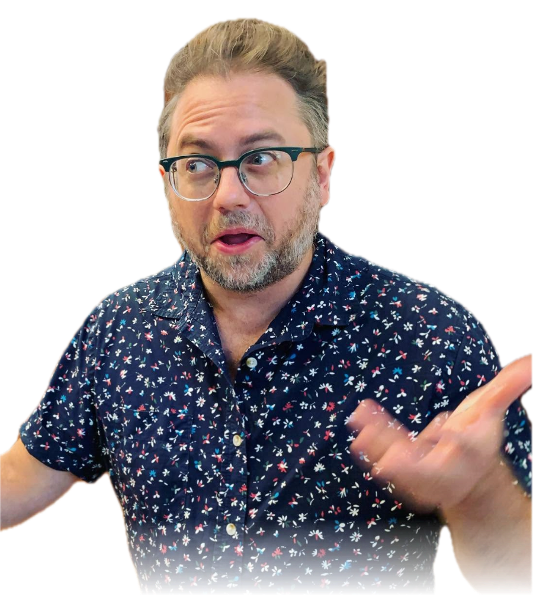

Hi! I’m Marc LeMay, a designer with over two decades of experience crafting learning for adults and developing large-scale creative projects. I specialize in making complex subjects digestible and engaging, especially for reluctant learners. Music theory students and busy parents often come to me skeptical, but leave with new perspectives on the material.
My twin passions are education and creative collaboration.

Design
Needs analysis · learning objectives · curriculum and course design · rubric and assessment design · rules-based scoring · scripts and storyboarding · program assessment and reporting · accessibility (Section 508, WCAG 2.1 AA)
Tools
Rise 360 · Microsoft 365 (PowerPoint, advanced; Teams; SharePoint) · Canvas · D2L Brightspace · Figma · HTML, CSS, and JavaScript · Pro Tools · Final Cut Pro · DaVinci Resolve · AI-assisted build and drafting (Claude, ChatGPT, Gemini)
If you’d like to discuss a project or a position, or you’re a fellow instructional designer who just wants to reach out, let’s connect!
If it’s urgent, you can email me directly at marclemaydesign@gmail.com
Availability
Open to full-time instructional design roles, remote or Tallahassee-based. Also available for project work.
Where I am
Tallahassee, Florida (Eastern time). Part of each year in London (UK time). Remote from both.